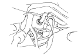
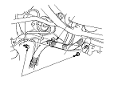
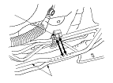
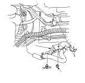
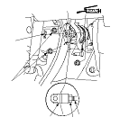
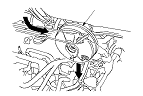
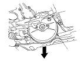

Sostituzione servofreno
Versione con guida a destra
NOTA:
Versione con guida a sinistra.
Rimuovere la pompa.
Scollegare il tubo flessibile della depressione (A) del servofreno.

Rimuovere la staffa (A) del cablaggio motore.

Rimuovere le tubazioni dei freni (A) dalla fascetta (B) lato conducente.

Rimuovere la staffa (A) del tubo flessibile della depressione.

Rimuovere la spina di bloccaggio (A) e il perno (B) del giunto, quindi allentare il dado (C) e scollegare la forcella (D) dal pedale del freno.
Rimuovere i dadi di fissaggio (E) del servofreno.
Rimuovere la forcella dall'asta (F) del servofreno.
Rimuovere l'albero intermedio.
Rimuovere il collettore di scarico.

Tirare in avanti il servofreno (A), quindi spostarlo verso il lato passeggero.
Durante il rimontaggio non danneggiare le superfici del servofreno e le filettature dei bulloni.
Non piegare o danneggiare le tubazioni del freno o i tubi flessibili e le tubazioni di altri componenti.

Muovere il servofreno (A) verso il basso e ruotarlo, quindi rimuoverlo dalla vettura.
Installare il servofreno nell'ordine inverso rispetto alla rimozione facendo attenzione a quanto segue:
Usare sempre una nuova spina di bloccaggio.
Installare la pompa dopo aver installato il servofreno.
Controllare l'altezza e il gioco del pedale del freno dopo l'installazione della pompa e, se necessario, regolarli.
Spurgare l'impianto freni.
